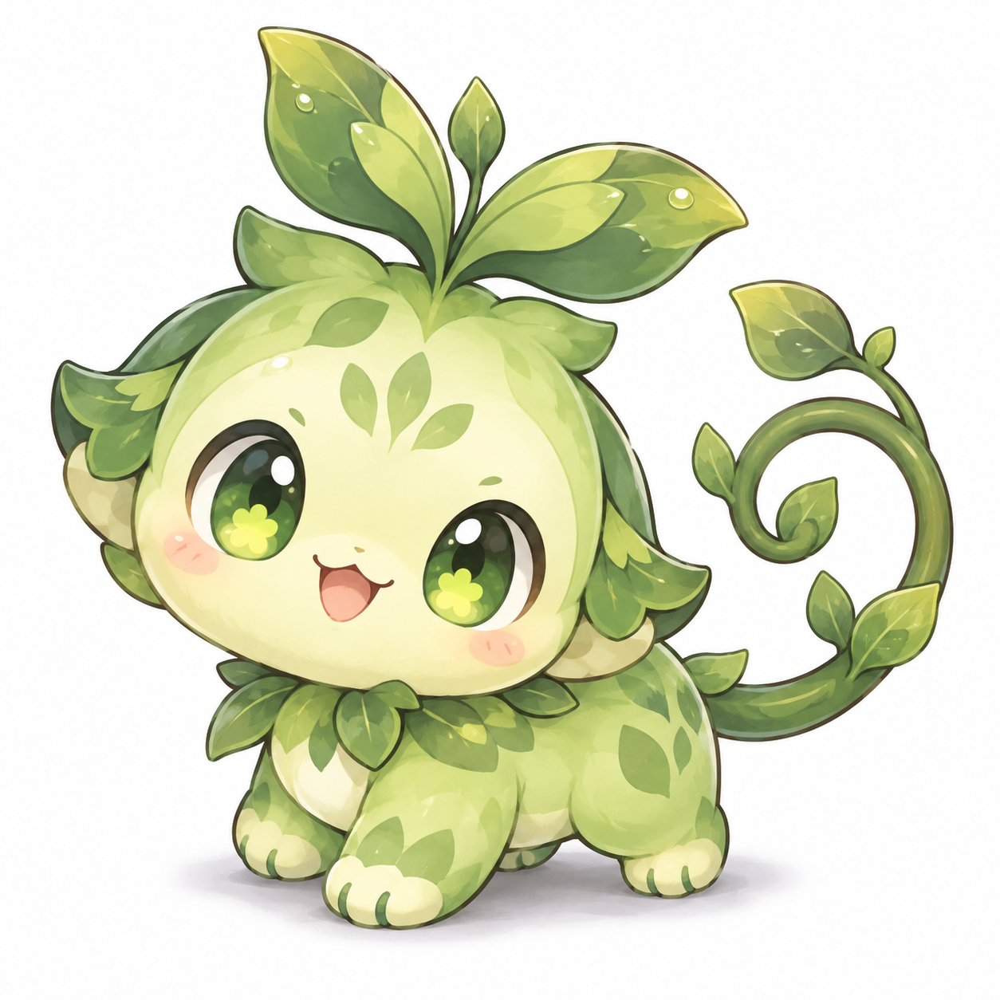
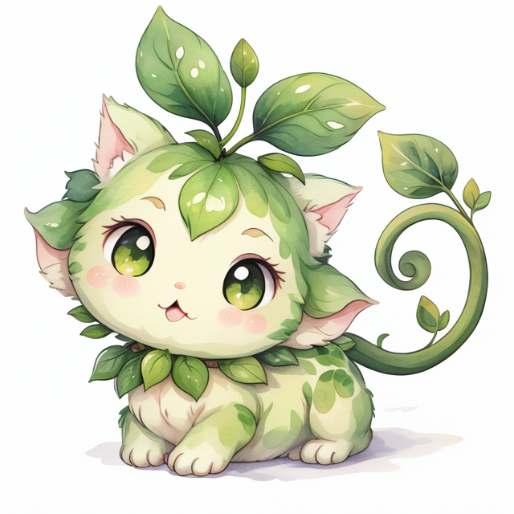
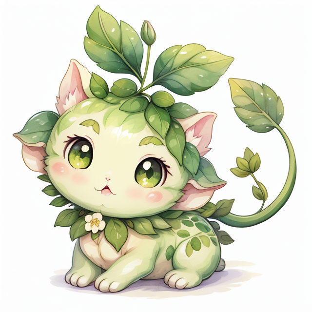
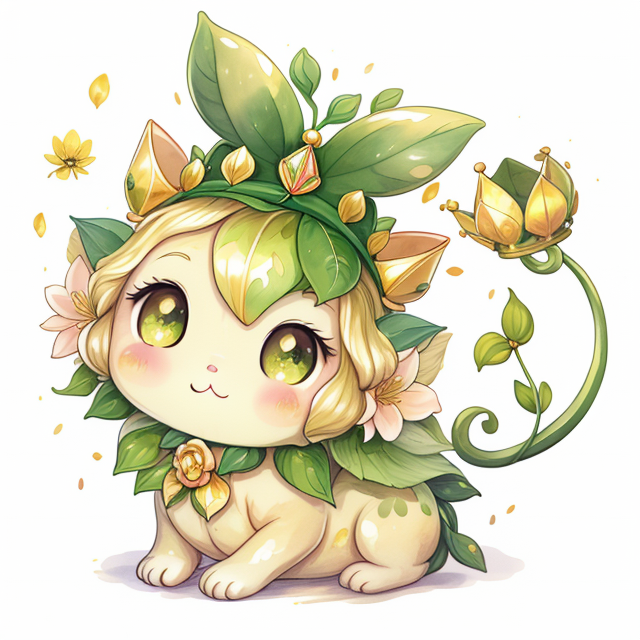
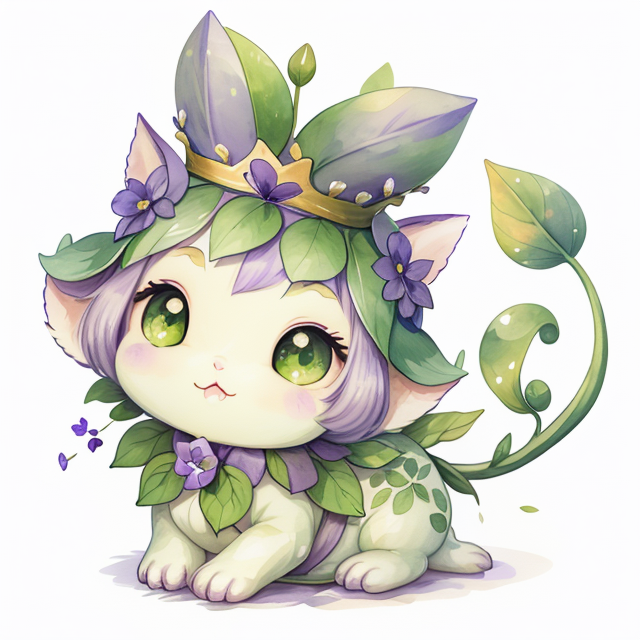
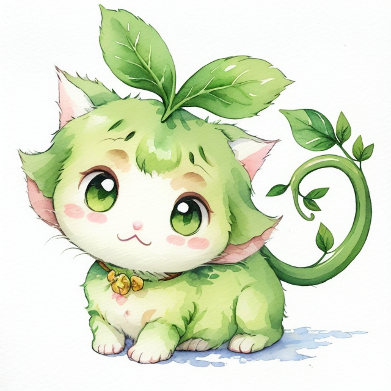
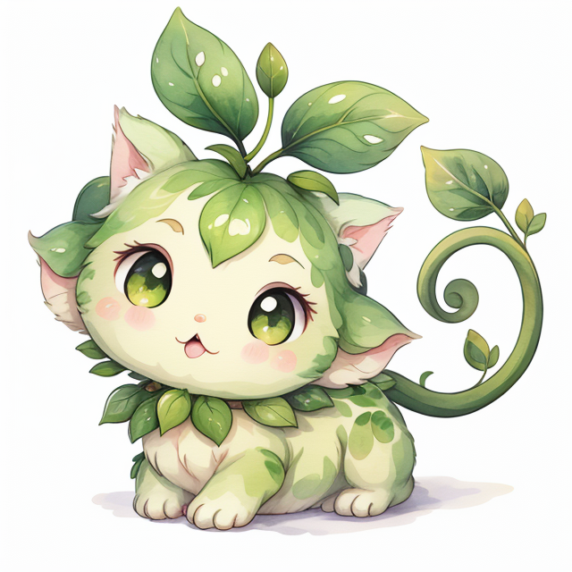
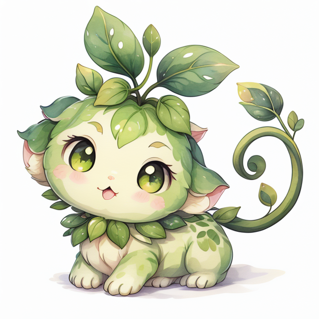

이 페이지는 이전 실험 기록입니다. 성숙기 체형을 보완하고 게임 생성기에 연결한 최신 결과는 새 진화 갤러리에서 확인하세요. 아래 설명과 이미지는 당시 실험을 보존한 것입니다.
모든 진화 단계에서 1단계 원본을 공통 참조하고, 직전 단계 이미지를 변형합니다. 최종 두 분기는 같은 3단계에서 출발합니다. 모든 새 이미지는 로컬 ComfyUI에서 생성했습니다. 이미지를 누르면 원본 크기로 볼 수 있습니다.
검토 기준: 같은 펫으로 보이는지, 채색과 눈 모양이 이어지는지, 성장과 두 분기가 구분되는지 확인해 주세요. 이 페이지는 후보 비교이며 게임 기본 생성 설정은 아직 변경하지 않았습니다.







